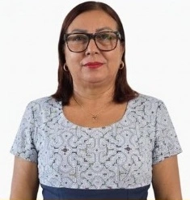
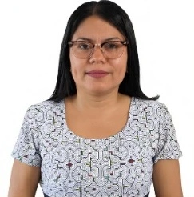
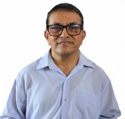
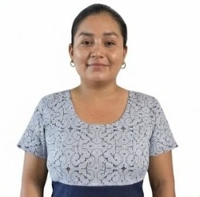
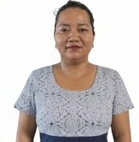

Lic. Marilyn Alvarado Silva
Área responsable:
Directora(e) del CREBE "Señor de los Milagros"
Correo:
integrante1@crebeucayali.com

ECOSISTEMA VIRTUAL ACCESIBLE
Espacio de entrada a páginas generales de orientación, contacto, directorio, registro de visita y recursos de apoyo que complementan los módulos principales del CREBE Ucayali.
Directorio institucional
En esta sección se presentan los integrantes responsables o vinculados a la gestión, revisión y acompañamiento de los recursos educativos digitales de la plataforma. Pase el cursor o enfoque una ficha para visualizar la fotografía del profesional.
Área responsable:
Directora(e) del CREBE "Señor de los Milagros"
Correo:
integrante1@crebeucayali.com

Área responsable:
Psicología
Correo:
gabriel@crebesmucayali.com

Área responsable:
TIC´s y Producción de materiales
Correo:
ruvari@crebesmucayali.com

Área responsable:
TEA
Correo:
mariopf@crebesmucayali.com

Área responsable:
Discapacidad auditiva
Correo:
keomara@crebesmucayali.com

Área responsable:
Discapacidad visual
Correo:
leslidelaguila@crebesmucayali.com
